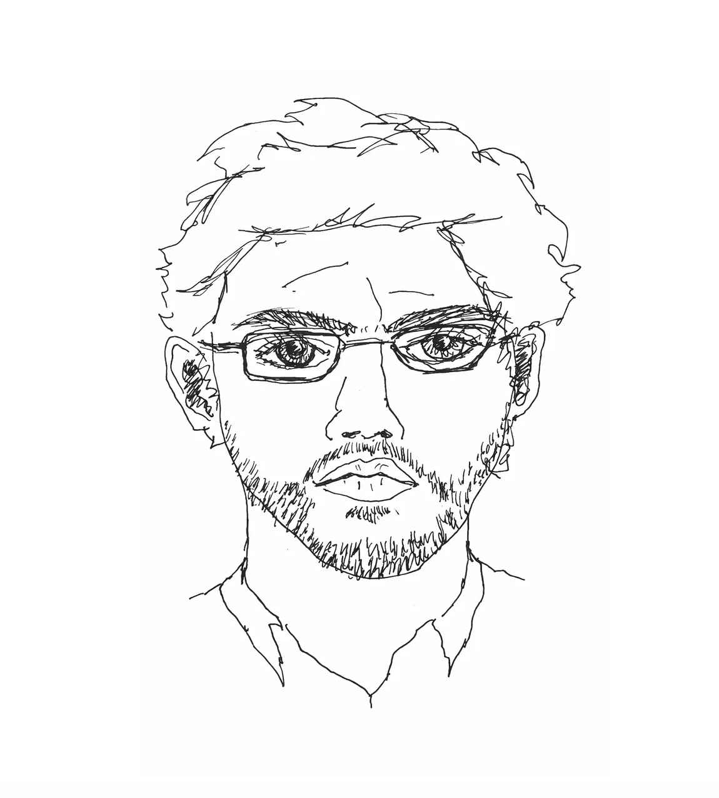
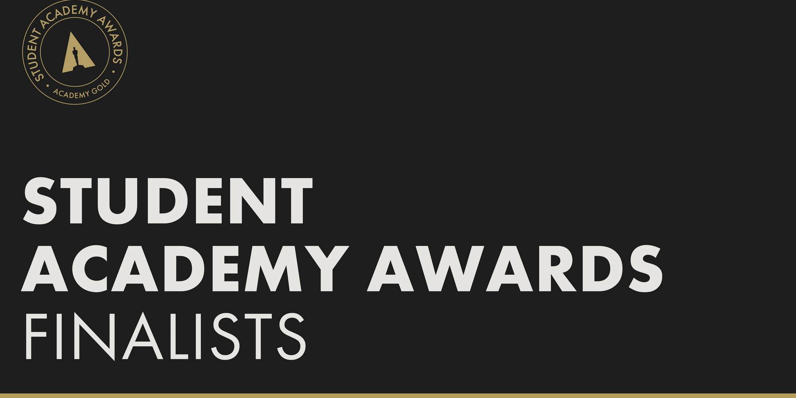

I'm a Paris-based filmmaker and screenwriter. I have written for France Télévisions, Zadig Films, Wendigo Films, Kepler 22 Productions, and France Culture, and I have received numerous grants from the CNC (Aide à l’écriture, Aide au développement renforcé, Aide à la réalisation du court-métrage) as well as from Institut Français (Bourse Lumière).
My films have been shown at festivals such as Full Frame, Austin International Film Festival, FIPA, the Student Academy Awards. I'm a graduate of Stanford’s documentary MFA where I was a Fulbright scholar and from Université Paris-X Nanterre where I wrote a thesis on Nietzsche’s and Kant's Aesthetics.
I have taught Film, Film History, and Screenwriting since 2010 at Stanford in Paris, American University in Paris, Sciences Po, among others.

As a writing consultant, I have worked for Zadig Films, France 3, Le Fresnoy (Studio National des Arts Contemporains), EICAR, Error Image Studio (Calcutta). I have also created filmmaking workshops at American University in Paris, Stanford in Paris, Sciences Po Paris. I have been part of the jury of the Fulbright Committee.
I'm available for consultations on Feature Film writing, as well as for Documentary Proposal Writing.
My approach as a script consultant is based on narrative tools, but also on openness to the singularity of each project.